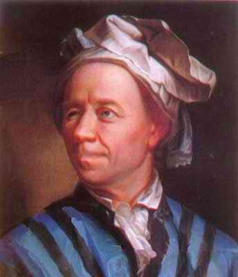

|
|
87 LEONHARD EULER 1707-1783
Di
abad ke-17 Swiss punya seorang matematikus dan ahli fisika
yang teramat brilian dan ilmuwan terkemuka sepanjang masa.
Orang itu Leonhard Euler. Hasil karyanya mempengaruhi
penggunaan semua bidang fisika dan di banyak bidang
rekayasa.
Hasil matematika dan ilmiah Euler betul-betul tak masuk
akal. Dia menulis 32 buku lengkap, banyak diantaranya
terdiri dari dua jilid, beratus-ratus artikel tentang
matematika dan ilmu pengetahuan. Orang bilang, kumpulan
tulisan-tulisan ilmiahnya terdiri dari lebih 70 jilid!
Kegeniusan Euler memperkaya hampir segala segi matematika
murni maupun matematika siap pakai, dan sumbangannya
terhadap matematika fisika hampir tak ada batasnya untuk
penggunaan.
Euler khusus ahli mendemonstrasikan bagaimana hukum-hukum
umum mekanika, yang telah dirumuskan di abad sebelumnya oleh
Isaac Newton, dapat digunakan dalam jenis situasi fisika
tertentu yang terjadi berulang kali. Misalnya, dengan
menggunakan hukum Newton dalam hal gerak cairan, Euler
sanggup mengembangkan persamaan hydrodinamika. Juga, melalui
analisa yang cermat tentang kemungkinan gerak dari barang
yang kekar, dan dengan penggunaan prinsip-prinsip Newton.
Dan Euler berkemampuan mengembangkan sejumlah pendapat yang
sepenuhnya menentukan gerak dari barang kekar. Dalam
praktek, tentu saja, obyek benda tidak selamanya mesti
kekar. Karena itu, Euler juga membuat sumbangan penting
tentang teori elastisitas yang menjabarkan bagaimana benda
padat dapat berubah bentuk lewat penggunaan tenaga luar.
Euler juga menggunakan bakatnya dalam hal analisa
matematika tentang permasalahan astronomi, khusus menyangkut
soal "tiga-badan" yang berkaitan dengan masalah bagaimana
matahari, bumi, dan bulan bergerak di bawah gaya berat
mereka masing-masing yang sama. Masalah ini --suatu masalah
yang jadi pemikiran untuk abad ke-21-- belum sepenuhnya
terpecahkan. Kebetulan, Euler satu-satunya ilmuwan terkemuka
dari abad ke-18 yang (secara tepat, seperti belakangan
terbukti) mendukung teori gelombang cahaya.
Buah pikiran Euler yang berhamburan tak hentinya itu
sering menghasilkan titik tolak buat penemuan matematika
yang bisa membuat seseorang masyhur. Misalnya, Joseph Louis
Lagrange, ahli fisika matematika Perancis, berhasil
merumuskan serentetan rumus ("rumus Lagrange") yang punya
makna teoritis penting dan dapat digunakan memecahkan
pelbagai masalah mekanika. Rumus dasarnya diketemukan oleh
Euler, karena itu sering disebut rumus Euler-Lagrange.
Matematikus Perancis lainnya, Jean Baptiste Fourier, umumnya
dianggap berjasa dengan penemuan teknik matematikanya,
terkenal dengan julukan analisa Fourier. Di sini pun, rumus
dasarnya pertama diketemukan oleh Leonhard Euler, dan
dikenal dengan julukan formula Euler- Fourier. Mereka
menemukan penggunaan yang luas dan beraneka macam di bidang
fisika, termasuk akustik dan teori elektromagnetik.
Dalam urusan matematika, Euler khusus tertarik di bidang
kalkulus, rumus diferensial, dan ketidakterbatasan suatu
jumlah. Sumbangannya dalam bidang ini, kendati amat penting,
terlampau teknis dipaparkan di sini. Sumbangannya di bidang
variasi kalkulus dan terhadap teori tentang kekompleksan
jumlah merupakan dasar dari semua perkembangan berikutnya di
bidang ini. Kedua topik itu punya jangkauan luas dalam
bidang penggunaan kerja praktek ilmiah, sebagai tambahan
arti penting di bidang matematika murni.
Formula Euler, , menunjukkan adanya hubungan antara
fungsi trigonometrik dan jumlah imaginer, dan dapat
digunakan menemukan logaritma tentang jumlah negatif. Ini
merupakan satu dari formula yang paling luas digunakan dalam
semua bidang matematika. Euler juga menulis sebuah textbook
tentang geometri analitis dan membuat sumbangan penting
dalam bidang geometri diferensial dan geometri biasa.
Kendati Euler punya kesanggupan yang hebat untuk
penemuan-penemuan matematika yang memungkinkannya melakukan
praktek-praktek ilmiah, dia hampir punya kelebihan setara
dalam bidang matematika murni. Malangnya, sumbangannya yang
begitu banyak di bidang teori jumlah, tetapi tidak begitu
banyak yang bisa dipaparkan di sini. Euler juga orang pemula
yang bekerja di bidang topologi, sebuah cabang matematika
yang punya arti penting di abad ke-20.
Akhirnya, Euler memberi sumbangan penting buat sistem
lambang jumlah matematik masa kini. Misalnya, dia
bertanggung jawab untuk penggunaan umum huruf Yunani untuk
menerangkan rasio antara keliling lingkaran terhadap
diameternya. Dia juga memperkenalkan banyak sistem tanda
yang cocok yang kini umum dipakai di bidang matematika.
Euler lahir tahun 1707 di Basel, Swiss. Dia diterima
masuk Universitas Basel tahun 1720 tatkala umurnya baru
mencapai tiga belas tahun. Mula-mula dia belajar teologi,
tetapi segera pindah ke mata pelajaran matematika. Dia
peroleh gelar sarjana dari Universitas Basel pada umur tujuh
belas tahun dan tatkala umurnya baru dua puluh tahun dia
terima undangan dari Catherine I dari Rusia untuk bergabung
dalam Akademi Ilmu Pengetahuan di St. Petersburg. Di umur
dua puluh tiga tahun dia jadi mahaguru fisika di sana dan
ketika umurnya dua puluh enam tahun dia menggantikan korsi
ketua matematika yang tadinya diduduki oleh seorang
matematikus masyhur Daniel Bernoulli. Dua tahun kemudian
penglihatan matanya hilang sebelah, namun dia meneruskan
kerja dengan kapasitas penuh, menghasilkan artikel-artikel
yang brilian.
Tahun 1741 Frederick Yang Agung dari Prusia membujuk
Euler agar meninggalkan Rusia dan memintanya bergabung ke
dalam Akademi Ilmu Pengetahuan di Berlin. Dia tinggal di
Berlin selama dua puluh lima tahun dan kembali ke Rusia
tahun 1766. Tak lama sesudah itu kedua matanya tak bisa
melihat lagi. Bahkan dalam keadaan tertimpa musibah macam
ini, tidaklah menghentikan penyelidikannya. Euler memiliki
kemampuan spektakuler dalam hal mental aritmatika, dan
hingga dia tutup usia (tahun 1783 di St. Petersburg --kini
bernama Leningrad-- pada umur tujuh puluh enam tahun), dia
terus mengeluarkan kertas kerja kelas tinggi di bidang
matematika. Euler kawin dua kali dan punya tiga belas anak,
delapan diantaranya mati muda.
Semua penemuan Euler bisa saja dibuat orang bahkan
andaikata dia tidak pernah hidup di dunia ini. Meskipun saya
pikir, kriteria yang layak digunakan dalam masalah ini
adalah mengajukan pertanyaan-pertanyaan: apa yang akan
terjadi pada dunia modern apabila dia tidak pernah berbuat
apa-apa? Dalam kaitan dengan Leonhard Euler jawabnya tampak
jelas sekali: pengetahuan modern dan teknologi akan jauh
tertinggal di belakang, hampir tak terbayangkan, tanpa
adanya formula Euler, rumus-rumusnya, dan metodenya. Sekilas
pandangan melirik indeks textbook matematika dan fisika akan
menunjukkan penjelasan-penjelasan ini sudut Euler (gerak
benda keras); kemantapan Euler (deret tak terbatas);
keseimbangan Euler (hydrodinamika); keseimbangan gerak Euler
(dinamika benda keras); formula Euler (variabel kompleks);
penjumlahan Euler (rentetan tak ada batasnya), curve
polygonal Eurel (keseimbangan diferensial); pendapat Euler
tentang keragaman fungsi (keseimbangan diferensial
sebagian); transformasi Euler (rentetan tak terbatas); hukum
Bernoulli-Euler (teori elastisitis); formula Euler-Fourier
(rangkaian trigonometris); keseimbangan Euler-Lagrange
(variasi kalkulus, mekanika); dan formula Euler-Maclaurin
(metode penjumlahan) itu semua menyangkut sebagian yang
penting-penting saja.
Dari sudut ini, pembaca mungkin bertanya-tanya kenapa
Euler tidak dapat tempat lebih tinggi dalam daftar urutan
buku ini. Alasan utama ialah, meskipun dia dengan brilian
dan sukses menunjukkan betapa hukum-hukum Newton dapat
diterapkan, Euler tak pernah menemukan prinsip-prinsip
ilmiah sendiri. Itu sebabnya mengapa tokoh-tokoh seperti
Becquerel, Rontgen, dan Gregor Mendel, yang masing-masing
menemukan dasar baru fenomena dan prinsip ilmiah,
ditempatkan di urutan lebih atas ketimbang Euler. Tetapi,
bagaimanapun juga, sumbangan Euler terhadap, dunia ilmu,
terhadap bidang rekayasa dan matematika, bukan alang
kepalang besarnya.
Situs Web
- http://www.maths.tcd.ie/pub/HistMath/People/Euler/RouseBall/RB_Euler.html
|